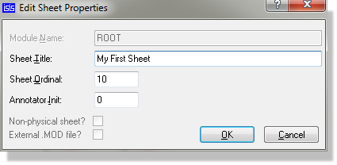

With very large designs, or just to create some structure in smaller ones, it is common practice to draw the various sections of the design on separate sheets. Connections between the sheets are then indicated by means of common net names. For example, if two nets on different sheets are both labelled as MREQ, then they are assumed to be connected - see net names for more information on net names.
Proteus supports multi-sheet designs and keeps all the sheets of a design in one file. The following commands on the Design menu give you all the facilities you need:
An additional two commands – Goto Previous root or sub-sheet and Goto Next root or subsheet are not exposed on the menu but can be mapped to shortcut keys via the Set Keyboard Mapping command on the System menu (default mappings are PGUP and PGDOWN). These commands work in exactly the same way as the Previous Sheet and Next sheet outlined above except that they will traverse the entire hierarchy of a schematic, moving between both root and subsheets (rather than only rootsheets).
The Design Explorer can also be used to navigate to a particular sheet (or indeed a particular net or component) and provides a user interface for schematic navigation. Alternatively, all the sheets in the design are presented and dynamically updated at the bottom of the Design menu.
The titles presented by the Goto Sheet command are taken from the Sheet Title field of the Edit Sheet Properties dialogue form or machine generated from <module><ordinal> (e.g. ROOT10, ROOT20) where no sheet title is given.

The Edit Sheet Properties Dialogue Form
The sheet ordinal determines its position in the design - i.e. the order in which the sheets will print if you print out the lot and which order they appear in the design menu.
The annotator init property is an extremely useful property which lets you set an annotation base for all components on the sheet. It can both be set here and also - under certain circumstances - in the Global Annotator. When working with a large design hierarchy, a little discipline with sheet annotation can add clarity to the design.